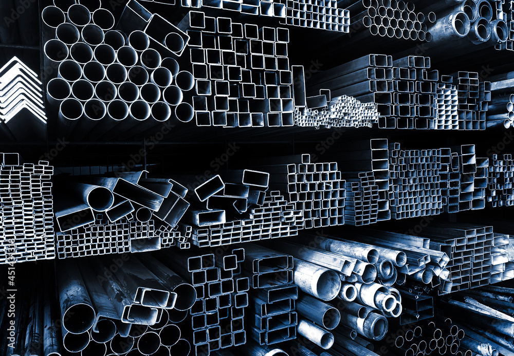

01
Procurement
Sourcing of products, materials and industrial supplies for energy operations — from requirement definition to supplier qualification and purchase coordination.
- Requirement definition and technical specification
- Supplier identification and qualification
- RFQ preparation and offer comparison
- Purchase order coordination and follow-up
- Inspection and acceptance documentation